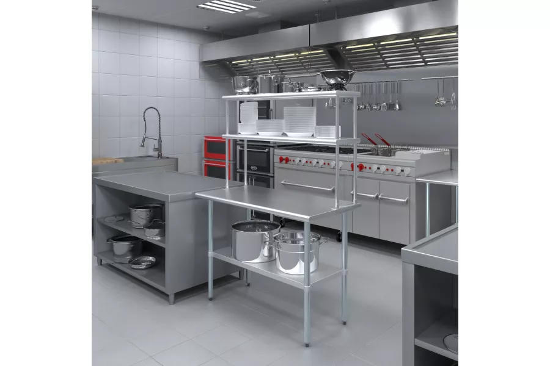
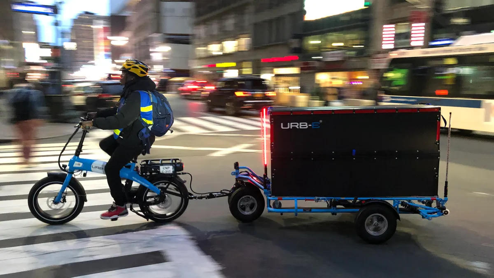
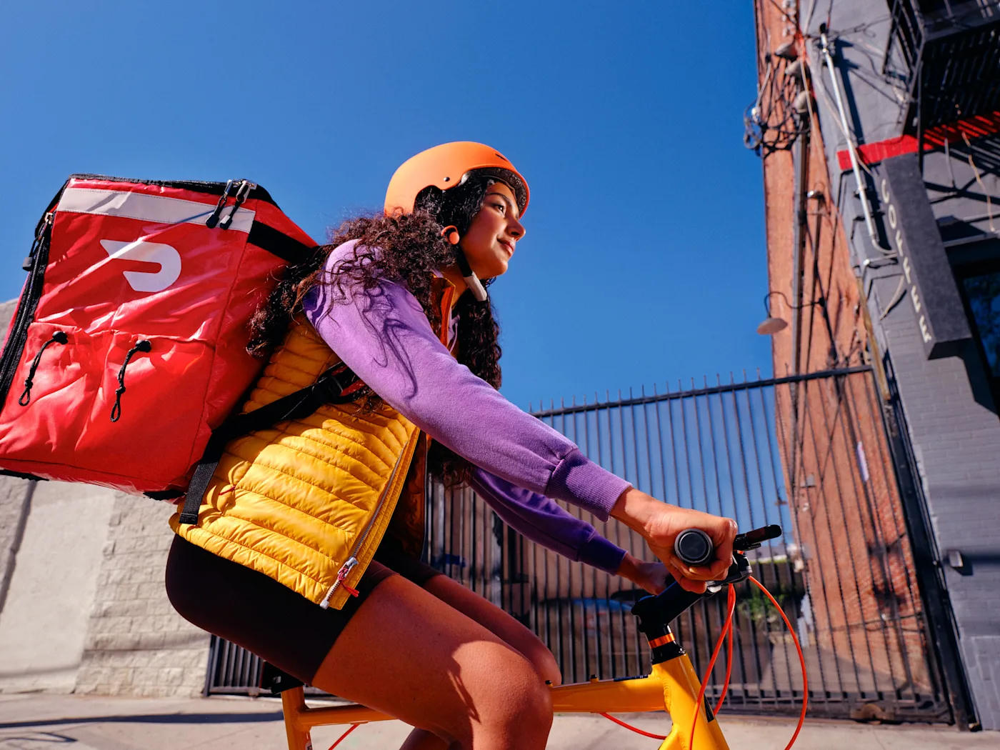
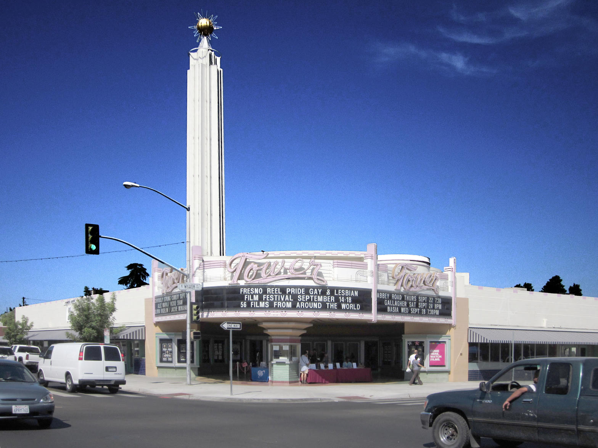

Imagine standing on Olive Avenue on a warm August evening. Restaurants are busy, delivery cars are circling for parking, and the sidewalks still carry the low hum of the district that has always preferred walking and short hops over long drives. For a cook who has prepared food for years, the idea is simple: a kitchen that never seats a customer, only packs orders, and a fleet that runs on muscle and a small battery instead of gasoline.
The Tower District is one of the few places in Fresno where this model can stay economical from day one. Short blocks, mixed uses, enough density to keep most deliveries inside a two-mile radius, and a street network that still remembers the streetcar era. A ghost kitchen here does not need a highway exit or a giant parking lot. It needs a clean, permitted kitchen and a reliable way to move insulated bags a few thousand feet at a time.
1. The Right Kitchen, Not a Restaurant
A traditional restaurant build-out is expensive because of front-of-house, restrooms, dining furniture, and the expectation of walk-in traffic. A ghost kitchen sheds almost all of that. One only needs production space that already meets Fresno County health standards or can be brought up to code quickly.

Practical options inside or near the district:
- Shared commissary or commercial kitchen rental by the hour or by the shift. Lowest capital, fastest start.
- A small vacant commercial unit that already has a kitchen hood or can accept a modest equipment package.
- A turnkey ghost-kitchen suite if one appears in the wider Fresno market. Still rare, but the model exists elsewhere.
The 2025 Tower District Specific Plan update and the ongoing vacant-property pilot both signal that underused commercial space is a known local problem. A clean, operational kitchen that puts a boarded building back into productive use is the kind of quiet win the neighborhood has been asking for.
2. Design the Menu for the Bike, Not the Dining Room
Bike delivery punishes volume and mess. Large, greasy, or fragile items arrive worse and cost more in packaging and failed trips. The menu should be built around three rules:
Compact
Items that nest or stack in insulated bags without crushing.
Heat-stable
Food that still tastes good after 12–20 minutes in a bag.
Fast to finish
Orders that leave the kitchen in under ten minutes once the ticket hits.
Think bowls, handhelds, rice or noodle dishes that reheat cleanly, and a short list of high-margin sides. Fewer SKUs mean less waste, simpler inventory, and faster training. The kitchen becomes a production line instead of a stage.
3. The Fleet: Cargo Bikes and Local Radius
This is where the real economizing happens. A single cargo e-bike or a sturdy regular bike with a good rear rack and insulated panniers or a delivery bag costs a fraction of a car. No fuel, no oil changes, no insurance premiums that scale with vehicle value, and almost no parking friction.

Start with one or two bikes. Limit the primary delivery zone to the core Tower District and immediate edges, roughly a 1.5 to 2 mile radius from the kitchen. Most orders stay inside that circle. Beyond it, either refuse the order or hand it to a third-party platform and accept the fee hit only on the margin.

The streets already favor this. Olive, Wishon, Van Ness, and the residential grid between them are scaled for bikes. Afternoon heat is real, so early evening and late-night windows matter, and a small battery assist turns the worst days into manageable ones.
4. Orders, Fees, and Keeping the Margin
Third-party apps bring customers but take 15–30 percent. One can use them for discovery while building a direct channel: Instagram, a simple website with Square or similar, text-to-order, or a presence inside local Facebook groups that already talk about food in the district.
Hybrid model that works in practice:
- List on one major platform for reach.
- Offer a clear discount or free delivery for direct orders inside the bike zone.
- Batch orders by neighborhood when possible so one ride covers two or three drops.
- Keep packaging light and consistent so packing time stays short.
The math is straightforward. Lower fixed costs (no dining room staff, no large rent for front space) plus lower variable costs (bike instead of car, limited zone instead of city-wide chasing) leave more room even after ingredient and labor costs.
5. Permits and Reality Checks
Fresno County Environmental Health will want a commercial kitchen permit or a commissary agreement, food-handler cards, and a clear plan for hot-holding and cold-holding during transport. The city will want a business license. If the kitchen is in a shared space, the landlord’s existing permits may cover part of the path.
Insurance is still required: general liability and product liability at minimum. Bike delivery does not eliminate the need for coverage. It simply reduces some of the vehicle-related layers.
None of this is exotic. Ghost kitchens have been operating across California for years. The Tower District simply offers a geography that makes the bicycle version unusually practical.
Why the Tower District Fits
The neighborhood’s commercial heart still runs along Olive and the adjacent streets. Residences sit close enough that a rider can complete multiple drops without long empty miles. The updated Specific Plan emphasizes preserving the pedestrian scale and filling vacancies. A quiet kitchen that feeds people without adding car traffic or demanding new parking is aligned with that direction.

Closing the Loop
One does not need a million-dollar build-out or a fleet of branded vans. A clean kitchen, a short and thoughtful menu, one or two well-equipped bikes, a tight delivery radius, and a mix of platform and direct orders is enough to test the idea with real numbers instead of projections.
If the first months show that the zone holds, the food travels well, and the margin survives, the model can grow by adding a second shift or a second bike rather than by chasing city-wide scale. That is the quiet advantage of the Tower District: the geography already does half the economizing.
The rest is just consistent cooking and knowing which alleys stay clear after dark.
Sources & Further Reading
- Fresno City Council approves Tower District Specific Plan (Nov 2025)
- Tower District Preservation Association – History
- Square – What is a Ghost Kitchen and How to Start One
- How to Open a Ghost Kitchen – 2026 Startup Guide
- Ghost Kitchens: Complete Guide (delivery models and costs)
- Local observation: Tower District street grid, Olive Avenue commercial core, and ongoing commercial vacancy patterns (2025–2026).